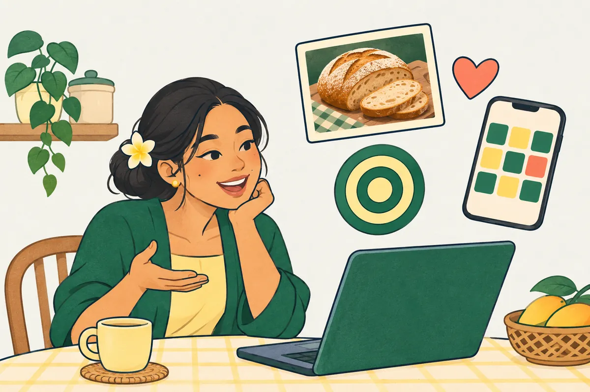

Biar AI buat reels anda
Anda tak perlu tahu edit video. Beritahu AI tentang akaun anda sekali sahaja. Selepas itu ia cari idea, buat reel, semak, siarkan bila anda kata OK, dan belajar daripada hasilnya.
Apa yang anda perlukan: AI yang boleh bekerja di komputer anda, seperti Claude Code dalam aplikasi desktop Claude. Satu prompt untuk setiap langkah. Apa yang anda buat sendiri cuma: login ke akaun anda bila ia minta, dan kata OK sebelum ia siarkan.
Contoh-contoh di sini ikut satu perniagaan kecil, sebuah kedai roti dari rumah, dari mesej pertama hingga laporan pagi.
Sekali sahaja
Beritahu AI tentang akaun anda

AI pasang apa yang diperlukan, sambung ke akaun anda dan simpan jawapan anda sebagai ringkasan. Anda tak perlu taip ini lagi.
Sediakan
Sediakan diri anda untuk buat reels bagi akaun saya. Buat setiap langkah sendiri: pasang alat video atau skill yang anda perlukan, sambung ke [Instagram / TikTok] saya supaya anda boleh baca statistik saya dan siarkan, dan hanya berhenti bila saya perlu login atau luluskan sesuatu. Akaun saya: [nama], tentang [apa yang saya siarkan]. Siapa yang tonton: [siapa]. Bahasa: [English / 中文 / BM]. Apa yang saya mahu daripada reels: [follow / share / jual [produk] / tempahan melalui WhatsApp]. Sasaran: kadar skip bawah 30%, purata tontonan sekurang-kurangnya separuh, 2+ follow dan 5+ share bagi setiap 1,000 tontonan. Gambar dan video saya ada dalam [folder / "tiada, buat dengan AI"]. Peraturan: jangan sekali-kali reka fakta, nombor atau ulasan. Jangan siarkan atau belanja duit tanpa OK saya. Simpan ini sebagai ringkasan akaun saya dan guna untuk setiap reel.
Contoh
… Akaun saya: kedai roti rumah kami, roti dan kek segar di Petaling Jaya. Siapa yang tonton: ibu-ibu 25 hingga 45 tahun di kawasan berdekatan. Bahasa: 中文 dan English. Apa yang saya mahu: pesanan melalui WhatsApp. Gambar dan video saya ada dalam Pictures/Bakery.
Setiap reel
Biar AI cari idea

AI tengok reels terbaik dan paling teruk dalam topik anda serta hasil anda sendiri, kemudian bawa 3 idea. Anda cuma pilih.
Cari idea
Cari idea reel saya yang seterusnya. Buat kajian sendiri: kaji reels paling berjaya dan paling teruk dalam topik saya (apa-apa bahasa) dan hasil saya sebelum ini. Beri saya 3 idea. Untuk setiap satu: ayat hook (disebut dalam masa bawah 3 saat), apa yang berlaku, kepada siapa orang akan hantar reel ini, dan kenapa ia patut capai sasaran saya. Tandakan yang anda akan pilih. Simpan apa yang anda belajar supaya idea seterusnya lebih bijak.
Contoh
Cari idea reel saya yang seterusnya.
1 (pilihan saya). 「香蕉黑了别丢！」 Pisang terlebih masak jadi roti pisang dalam 30 saat. Orang akan hantar kepada kawan yang selalu buang pisang.
2. 3 tanda roti anda dari kilang, bukan dari kedai roti.
3. Bakar 200 tart nanas untuk satu pesanan, semalaman.
Setiap reel
Biar AI buat

Skrip, suara, muzik, kapsyen, suntingan dan cover: AI buat semuanya, guna gambar dan video anda sendiri dulu.
Buat reel
Buat idea [1]. Buat semuanya sendiri: skrip, suara, muzik, kapsyen, suntingan dan cover. Guna gambar dan video saya sendiri dulu. Kalau ada yang tiada, buat dengan gambar AI. Tunjuk saya video yang sudah siap sebelum apa-apa disiarkan.
Contoh
Buat idea 1.
Setiap reel
AI semak, anda kata OK

AI tonton macam seorang penonton, betulkan bahagian yang lemah sendiri, tulis kapsyen dan pilih masa terbaik. Tiada apa yang disiarkan sehingga anda kata OK.
Semak dan siar
Semak reel sebelum siar: tonton macam seorang penonton dan beri markah berdasarkan sasaran saya. Kalau lemah, betulkan sendiri dan semak semula. Kemudian tulis kapsyen dan hashtag, pilih masa terbaik, dan siarkan selepas saya kata OK.
Contoh
Semak dan siarkan.
Kapsyen: 「香蕉黑了别丢！30 分钟变香蕉面包 🍌 Send this to the friend who always throws bananas away.」
Masa terbaik: malam ini, 8 malam. Siarkan?
OK.
Tak suka sesuatu? Cakap saja apa dan di mana, contohnya "Pada 0:05 ia perlahan" atau "muzik terlalu sedih". AI akan betulkan.
Sekali, kemudian ia berjalan sendiri
Biar AI belajar setiap pagi

Tetapkan sekali. Setiap pagi AI baca angka anda, simpan pengajaran dan sediakan idea seterusnya untuk anda.
Semakan harian
Setiap pagi pukul [8 pagi], buat ini sendiri: ambil statistik semalam, beritahu saya dalam 3 baris apa yang berjaya dan apa yang tidak (share dulu), simpan pengajaran, dan beri saya idea reel untuk hari ini. Kalau komputer saya tutup, buat bila ia hidup semula. Jangan sekali-kali siarkan tanpa OK saya.
Contoh: pagi esoknya
Berjaya: hook pada 0:01 dan ayat "hantar kepada". Tak berjaya: cover gelap, jadi sedikit orang tekan dari profil anda.
Pengajaran disimpan. Idea hari ini: 3 jenis roti yang boleh dibekukan selama seminggu.
Selepas langkah 1: satu baris buat semuanya
Bila AI sudah ada ringkasan anda, satu prompt ini jalankan langkah 2, 3 dan 4 berturut-turut.
Reel seterusnya, dari mula hingga siap
Buat reel saya yang seterusnya dari mula hingga siap: cari idea, buat, semak, dan tunjuk saya video yang sudah siap bersama kapsyen. Siarkan bila saya kata OK.